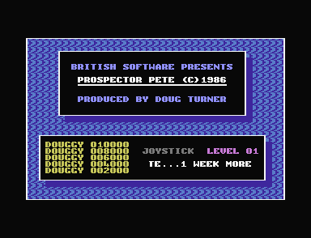
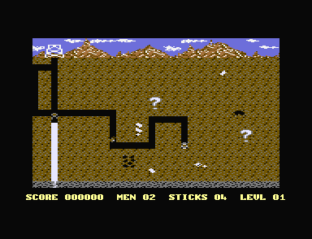

<meta charset="utf-8">
<meta name="viewport" content="width=device-width, initial-scale=1">
<title>Prospector Pete</title>
<link rel="preconnect" href="https://fonts.googleapis.com">
<link rel="stylesheet" href="https://fonts.googleapis.com/css2?family=Lato:wght@400;700;900&family=IBM+Plex+Mono:wght@400;500&display=swap">
<style>
:root{
  --bg:#23262d; --paper:#e9e7e1; --surface:#ffffff; --surface-2:#f1efea; --line:#d5d3cc; --line-soft:#e0ded8;
  --ink:#2f3136; --ink-soft:#55585f; --ink-mute:#80838a;
  --link:#1f5fa8; --link-hover:#154480; --accent:#1f5fa8;
  --amber:#c25a00; --cyan:#1f5fa8; --coral:#d04a3a; --green:#2a8a4a; --violet:#4a5bd6; --hl:#fff0c2;
  --chip:#2f3136; --chip-ink:#ffffff;
  --c64blue:#40318d; --c64grey:#686868;
  --fd:'Lato',system-ui,sans-serif; --fb:'Lato',system-ui,sans-serif; --fm:'IBM Plex Mono',ui-monospace,Menlo,monospace;
  --col:1080px; --gx:68px; --fs:17px; --lh:1.6; --hw:900; --h1:46px; --h2:26px; --sy:48px; --pp:26px; --r:10px;
  --plate-shadow:0 1px 2px rgba(0,0,0,.05),0 4px 14px rgba(0,0,0,.05);
}
*{box-sizing:border-box}
html{background:var(--bg);min-height:100%}
body{background:var(--paper);color:var(--ink);font-family:var(--fb);font-size:var(--fs);line-height:var(--lh);max-width:var(--col);margin:0 auto;min-height:100vh;padding:0 0 4rem}
h1,h2,h3{font-weight:var(--hw);letter-spacing:-.01em;text-wrap:balance;color:var(--ink);margin:0}
.wrap{padding:0 var(--gx)}
.hero{padding:48px var(--gx) 8px;text-align:left}
.eyebrow{font-family:var(--fm);font-size:12px;letter-spacing:.08em;text-transform:uppercase;color:var(--ink-mute);margin:0 0 10px}
.hero h1{font-size:var(--h1);line-height:1.15;letter-spacing:-.02em;margin:0 0 14px}
.hero .sub{margin:0 0 .6em;color:var(--ink-soft)}
section{padding:var(--sy) 0 24px}
section:last-of-type{border-bottom:none}
.fig{font-family:var(--fm);font-size:12px;letter-spacing:.08em;text-transform:uppercase;color:var(--ink-mute);margin:0 0 10px}
h2.t{font-size:var(--h2);margin-bottom:12px}
.lede{color:var(--ink-soft);margin:0 0 30px}
.plate{background:var(--surface);border:1px solid var(--line);border-radius:var(--r);padding:var(--pp);box-shadow:var(--plate-shadow)}
.cap{font-size:14px;color:var(--ink-mute);margin-top:14px;line-height:1.55}
.cap b{color:var(--ink);font-weight:700}
code{font-family:var(--fm);font-size:.82em;background:var(--chip);color:var(--chip-ink);border-radius:4px;padding:2px 6px;white-space:nowrap}

.pp-pair{display:grid;grid-template-columns:1fr 1fr;gap:18px;align-items:start}
.pp-pair img{width:100%;display:block;border-radius:4px;image-rendering:pixelated;background:#000}
.pp-bar{display:flex;flex-wrap:wrap;gap:8px;align-items:center;margin:0 0 12px;font-size:14px}
.pp-bar>div{margin:0;min-width:150px}
.pp-bar button,.pp-pad button{font:inherit;font-size:13px;padding:5px 11px;border:1px solid var(--line);background:var(--surface-2);color:var(--ink);border-radius:6px;cursor:pointer;touch-action:manipulation;user-select:none}
.pp-bar button:hover,.pp-pad button:hover{border-color:var(--ink-mute)}
.pp-bar button.on,.pp-pad button.on{background:var(--ink);color:#fff;border-color:var(--ink)}
.pp-bar label{display:flex;gap:6px;align-items:center;color:var(--ink-soft)}
.pp-map{width:100%;display:block;image-rendering:pixelated;background:#000;border-radius:4px}
.pp-map:focus{outline:2px solid var(--accent);outline-offset:2px}
.pp-pad{display:flex;flex-wrap:wrap;gap:6px;align-items:center;margin:12px 0 0}
.pp-pad button{min-width:42px;font-size:15px}
.pp-state{font-family:var(--fm);font-size:13px;color:var(--ink-soft);margin:10px 0 0;min-height:1.5em}
.pp-note{font-size:14px;color:var(--amber);margin:6px 0 0;min-height:1.4em}
.pp-frame{width:100%;max-width:640px;display:block;image-rendering:pixelated;background:#000;margin:0 auto}
.pp-wrapf{position:relative;max-width:640px;margin:0 auto}
.pp-band{position:absolute;left:0;right:0;border-top:2px dashed #ffd23f;pointer-events:none}
.pp-band span{position:absolute;right:4px;top:2px;font-family:var(--fm);font-size:11px;color:#ffd23f;background:rgba(0,0,0,.6);padding:0 4px;border-radius:3px}
.pp-small{display:flex;flex-wrap:wrap;gap:22px;align-items:flex-start}
.pp-small canvas{image-rendering:pixelated;background:#000;border-radius:4px;display:block}
.pp-ring{display:grid;grid-template-columns:repeat(3,64px);grid-template-rows:repeat(3,64px);gap:0;cursor:pointer}
.pp-verdict{font-family:var(--fm);font-size:15px;background:#1b1b1b;color:#c8c870;padding:10px 14px;border-radius:6px;margin:10px 0 0;min-height:2.6em}
.pp-table{border-collapse:collapse;font-size:14px;margin:10px 0;width:100%}
.pp-table th,.pp-table td{border-bottom:1px solid var(--line-soft);padding:4px 7px;text-align:right;vertical-align:top}
.pp-table th:first-child,.pp-table td:first-child{text-align:left}
.pp-table th{font-weight:700;color:var(--ink-soft);font-size:13px}
.pp-table tr.now td{background:var(--hl)}
#pp-sfx th,#pp-sfx td{text-align:left}
#pp-sfx button{font:inherit;font-size:13px;padding:3px 10px;border:1px solid var(--line);background:var(--surface-2);color:var(--ink);border-radius:6px;cursor:pointer;white-space:nowrap}
#pp-sfx button:hover{border-color:var(--ink-mute)}
.pp-scroll{overflow-x:auto}
.pp-legend{display:flex;flex-wrap:wrap;gap:14px;font-size:13px;color:var(--ink-soft);margin:10px 0 0}
.pp-legend i{display:inline-block;width:12px;height:12px;border-radius:2px;margin-right:6px;vertical-align:-1px}
.pp-goods{display:flex;flex-wrap:wrap;gap:14px;margin:4px 0 0}
.pp-good{text-align:center;font-size:12.5px;color:var(--ink-soft);width:74px}
.pp-good canvas{display:block;margin:0 auto 4px;image-rendering:pixelated;background:#000;border-radius:3px}
.pp-good b{display:block;color:var(--ink);font-size:14px}
.pp-need{font-size:14px;color:var(--coral)}
@media (max-width:720px){:root{--gx:18px;--h1:36px;--pp:16px}.pp-pair{grid-template-columns:1fr}}
</style>
<!-- tabs -->
<header class="hero">
  <p class="eyebrow">1986 · Mastertronic</p>
  <h1>Prospector Pete</h1>
  <p class="sub">Pete digs for gold under a mountain while a flood climbs the tunnels he has dug. The mine is rolled afresh from the machine's timers every time he starts a life, and a creature with nowhere to go stops the game for good.</p>
</header>
<main class="wrap">

<section id="game">
  <p class="fig">01 · The game</p>
  <h2 class="t">Dig out every goodie before the water reaches you</h2>
  <p class="lede">A budget tape for the 16 KB Commodore 16, written in four weeks by Doug Turner of British Software and sold by Mastertronic for £1.99.</p>
  <div class="pp-pair">
    
    
  </div>
  <p class="cap">The title screen and level 1, in plus4emu. On the right Pete has dug down the shaft and out to the right; the water (white) has filled the shaft below him.</p>
  <p>Pete starts each level at the top of a shaft that runs down the middle of a mine 90 cells wide and 20 deep, of which the screen shows 39 columns at a time. He digs wherever he walks, leaving a tunnel behind him. Buried in the earth are the goodies: lumps of gold and crystal, seams, oil, gas, money bags, and question marks, worth points when he walks into them. When the last one is collected a ladder appears at the top of the shaft, and Pete climbs out to end the level.</p>
  <p>At the bottom of the shaft a big charge of dynamite is already burning when the level starts. When it goes off the floor breaks, water comes up through it and spreads along every tunnel Pete has dug, rising from the bottom up. Creatures come out of the shaft one at a time once the flood has begun. The water or a creature costs Pete a life. He carries sticks of dynamite of his own, which kill the creatures and leave debris they cannot pass.</p>
</section>

<section id="mine">
  <p class="fig">02 · The mine and the flood</p>
  <h2 class="t">The water follows the tunnels you dig</h2>
  <p class="lede">The whole mine, 90 columns by 23 rows, running on the game's own code. Dig with the arrow keys or the buttons, lay a stick with the space bar, and watch the big charge at the bottom of the shaft let the water in.</p>
  <div class="plate">
    <div class="pp-bar">
      <div class="pick"><a class="step" id="pp-mprev" aria-label="Previous level">‹</a><select id="pp-mlevel" aria-label="Level"></select><a class="step" id="pp-mnext" aria-label="Next level">›</a></div>
      <button type="button" id="pp-mroll">New mine</button>
      <button type="button" id="pp-mrun" class="on">Pause</button>
      <button type="button" id="pp-mfast">Four times as fast</button>
    </div>
    <canvas id="pp-mine" class="pp-map" width="720" height="184" tabindex="0" aria-label="The mine. Use the arrow keys to dig and the space bar to lay a stick."></canvas>
    <div class="pp-pad" id="pp-pad">
      <button type="button" data-x="-1" aria-label="Left">←</button><button type="button" data-y="-1" aria-label="Up">↑</button><button type="button" data-y="1" aria-label="Down">↓</button><button type="button" data-x="1" aria-label="Right">→</button>
      <button type="button" data-fire="1">Stick</button>
    </div>
    <p class="pp-state" id="pp-mstate"></p>
    <p class="pp-note" id="pp-mnote"></p>
    <p class="cap">The game's own routines, run on the kit's 6502 over the listing: <code>start_level</code> (<code>$1C54</code>) builds the mine with random numbers in place of TED's timers, Then, as <code>irq_play</code> and <code>main_loop</code> do, each frame runs <code>dynamite</code> and <code>check_big_charge</code>, <code>move_pete</code> every other frame (every frame from level 10), and <code>water_step</code> every few frames once the flood has begun. The creatures, the scoring, and Pete's deaths are left out. From the same memory and the same joystick, the game in plus4emu made the same map in each of 1,166 frames of play, and the same mine on levels 1, 6, and 16 from the same timer readings.</p>
  </div>
  <p>The mine is not stored anywhere. <code>start_level</code> fills rows 3 to 22 of the map with earth, scatters the level's goodies at random (<code>place_goodies</code>), opens the shaft at column 44, and lays the walls, every time a level starts and every time Pete loses a life. The random numbers come from TED's two timers, the raster line, and the beam's position, mixed with a running seed (<code>random_below</code>). A goodie is placed only where the four-by-four block round it holds no other, so goodies never touch, and every one of them must be collected. How many of each kind a level gets is on the <a href="levels.html">Maps / levels</a> tab.</p>
  <p>The big charge is a stick of dynamite in the bottom cell of the shaft (<code>$3F78</code>) with a longer fuse: 255 frames on level 1, 90 on level 16. When its explosion is over, <code>check_big_charge</code> breaks the floor under it and turns the cell into the first water. The water spreads one stage at a time: falling water spreads left, right, and down, water flowing sideways carries on and also goes down and up, and rising water goes left, right, and up. Water rises above its highest row only when nothing below is still filling (<code>flow_up</code>), so it fills the lowest tunnels first. A cell Pete digs beside full water lets it in (<code>let_water_in</code>). On level 1, with Pete standing still at the top of the shaft, the water reaches him 666 frames into the level, a little over 13 seconds.</p>
</section>

<section id="frame">
  <p class="fig">03 · One frame, rebuilt from memory</p>
  <h2 class="t">The screen is drawn in three bands</h2>
  <p class="lede">The game changes TED's registers three times as the beam goes down the screen, so one picture needs three sets of them.</p>
  <div class="plate">
    <div class="pp-bar">
      <label>Step of the day <input type="range" id="pp-fday" min="0" max="15" value="2"> <span id="pp-fdayv"></span></label>
      <label><input type="checkbox" id="pp-fbands" checked> Mark the bands</label>
      <label><input type="checkbox" id="pp-fone"> Draw with one set of registers</label>
    </div>
    <div class="pp-wrapf"><canvas id="pp-frame" class="pp-frame" width="640" height="400"></canvas><div id="pp-fmarks"></div></div>
    <p class="cap" id="pp-fcap">A frame of play on level 1, drawn from the screen memory the game left (<code>$0800</code> colours, <code>$0C00</code> characters) and the character set, with the characters the game had redrawn for Pete and a creature, by the site's TED renderer. Against plus4emu's own picture of the same frame, <b>0 of the 64,000 pixels</b> differ; drawn with one set of registers, as they stand at the end of the frame, 30,259 differ: the mine slides back seven pixels and the sky takes the mine's colours.</p>
  </div>
  <p>Everything on the screen is a character: the C16 has no sprites. TED shows the game's own 256 characters at <code>$1000</code> in multicolour mode, where each character is 4 pixels across, each two pixels wide, in one of four colours: the background, two colours shared by the whole screen, and a fourth from the cell's colour byte. The interrupt (<code>irq_play</code>) changes those shared colours twice during each frame. At line 0 it sets the surface's three colours for the time of day; at line <code>$1A</code>, just below the third row, it sets the mine's black, grey, and brown; at line <code>$BA</code>, above the status line, it turns off the sideways scroll and widens the window back to 40 columns, so that the score does not slide with the mine.</p>
  <p>The view is 39 columns of the 90-column map, copied to the screen every frame (<code>draw_view</code>), and moved sideways a pixel at a time with TED's fine scroll (<code>scroll_view</code>), whose value the game keeps in <code>$03</code>. The surface darkens through the day: the interrupt moves the day on one of 16 steps every 256 frames, from light blue through grey to black and back, about 82 seconds a day (<code>sky_background</code>, <code>sky_colour1</code>, <code>sky_colour2</code>). The day starts again with every life.</p>
</section>

<section id="figures">
  <p class="fig">04 · Pete and the creatures</p>
  <h2 class="t">Moving figures are characters redrawn every frame</h2>
  <p class="lede">Pete and each creature are two characters of their own, rebuilt every frame from the earth or tunnel behind them, so they glide between cells.</p>
  <div class="plate">
    <div class="pp-bar">
      <button type="button" class="on" data-who="0">Pete</button><button type="button" data-who="1">A creature</button>
      <span style="width:8px"></span>
      <button type="button" data-dir="4" class="on">Right</button><button type="button" data-dir="3">Left</button><button type="button" data-dir="1">Up</button><button type="button" data-dir="2">Down</button><button type="button" data-dir="0">Standing</button>
      <button type="button" id="pp-gstep">Step</button>
      <label><input type="checkbox" id="pp-gplay" checked> Play</label>
    </div>
    <div class="pp-small"><canvas id="pp-fig" width="288" height="160" aria-label="A figure moving along a tunnel."></canvas><canvas id="pp-figch" width="160" height="160" aria-label="The figure's two characters, enlarged."></canvas></div>
    <p class="pp-state" id="pp-gstate"></p>
    <p class="cap">The game's <code>stamp_figures</code>, <code>draw_figures</code> and <code>unstamp_figures</code>, as <code>irq_play</code> calls them before and after copying the view, run on the kit's 6502 over frames that <code>build_figures</code> made at start-up. On the right, the figure's two characters as <code>draw_figures</code> left them, four times the size.</p>
  </div>
  <p>Each figure has two characters, Pete's <code>$CE</code> and <code>$CF</code> and the creatures' the pairs after them. Before the view is copied to the screen, <code>stamp_figures</code> puts a figure's pair into the map over the cell it is leaving and the cell it is entering, saving what was there. <code>draw_figures</code> then builds each of the two characters' eight rows from the saved character's row, ANDed with a mask and ORed with a picture, so the earth or tunnel shows round the figure. Once the view is copied, <code>unstamp_figures</code> puts the map back.</p>
  <p>A move from one cell to the next takes four steps, one multicolour pixel (two screen pixels) a step. The pictures and masks for every step are shifted once, at start-up, from the frames stored in the character set (<code>build_figures</code>, <code>shift_frames</code>): pages <code>$0400</code> for up and down, <code>$0500</code> for left, and <code>$0600</code> for right, Pete's in the first half of each page and a creature's in the second. Pete standing still is one character, his standing picture over the cell he is in (<code>draw_standing</code>).</p>
</section>

<section id="digging">
  <p class="fig">05 · Digging</p>
  <h2 class="t">Every tunnel is one cell wide</h2>
  <p class="lede">Pete may dig anywhere below the surface, except where the move would open a hole two cells square.</p>
  <div class="plate">
    <div class="pp-small">
      <div><canvas id="pp-ring" width="192" height="192" style="width:192px;height:192px;cursor:pointer" aria-label="The eight cells round the cell Pete wants to enter. Click a cell to dig it out or fill it in."></canvas></div>
      <div style="flex:1;min-width:220px"><p class="pp-state" id="pp-rstate" style="font-size:15px"></p><p class="cap" style="margin-top:6px">Click a cell to dig it out or fill it in. Pete, on the left, is moving right into the middle cell. The answer is the game's own <code>can_enter</code> (<code>$218C</code>), which calls <code>check_ring</code>, run on the kit's 6502.</p></div>
    </div>
  </div>
  <p>Before Pete steps into a cell, <code>can_enter</code> asks <code>check_ring</code> about the eight cells round it, read clockwise from the top left through the offsets at <code>ring_offsets</code>. Each counts as open when it holds tunnel, water, a stick, an explosion, or debris. If any corner and both its neighbours along the sides are open, the cell Pete would open would make a hole two cells square, and the move is refused. Pete cannot dig two tunnels side by side, and every tunnel stays one cell wide.</p>
  <p>The rest of the test is about what is in the cell itself. Earth, tunnel, a stick, an explosion, or debris let him in; debris is cleared as he does. Anything else stops him and is left for <code>pete_touches</code>: a goodie is collected, water or the face kills him, and a wall is only in the way. He keeps to columns 1 to 88 and rows 4 to 21 (<code>move_pete</code>). A cell takes four steps to dig, the earth eaten away in three stages drawn for each direction he moves (<code>chr_digging</code>), and Pete takes a step every other frame, every frame from level 10.</p>
</section>

<section id="creatures">
  <p class="fig">06 · The creatures</p>
  <h2 class="t">Where a creature heads next</h2>
  <p class="lede">Each time a creature reaches the middle of a cell it chooses again. Click the map to move the creature and see, for every place Pete could stand, which way it would go.</p>
  <div class="plate">
    <div class="pp-bar">
      <button type="button" class="on" data-read="col">As the game reads it</button><button type="button" data-read="row">With the creature's row</button>
    </div>
    <canvas id="pp-heads" class="pp-map" width="704" height="144" style="cursor:crosshair" aria-label="For each place Pete could be, where the creature would head."></canvas>
    <div class="pp-legend"><span><i style="background:#4a8fd6"></i>heads up</span><span><i style="background:#e08a2a"></i>heads down</span><span><i style="background:#c9c6be"></i>wanders</span><span><i style="background:#2f3136"></i>the creature</span></div>
    <p class="pp-state" id="pp-hstate"></p>
    <p class="cap">The game's <code>move_creatures</code> (<code>$2778</code>), run on the kit's 6502 once for each of the 1,584 cells Pete can stand in (columns 1 to 88, rows 4 to 21), for a creature moving left with every way round it open. Its reads of TED are fixed so that it chases, and tries up or down before across. "With the creature's row" changes one byte, the operand of the <code>SBC</code> at <code>$27A6</code>, from <code>$8A</code> to <code>$8E</code>.</p>
  </div>
  <p>A creature moves only through tunnel, water, sticks, and explosions: it cannot dig, and debris stops it. At the end of each cell, <code>move_creatures</code> works out how far Pete is across and how far up or down. If those two numbers ANDed together are not zero, five times in eight it chases: it tries the way across towards Pete, or the way up or down, the order chosen at random, never straight back the way it came (<code>chase_across</code>, <code>chase_updown</code>). Otherwise it wanders: it takes the first open way from a random one, turning back only when there is nothing else (<code>move_creature</code>). The randomness is TED's timers again. At night the creatures move at the faster of the level's two speeds.</p>
  <p>The distance up or down is Pete's row less the creature's <em>column</em>. Pete's row is 4 to 21 and a creature's column is up to 88, so the distance is nearly always negative, and a creature chasing up or down nearly always goes up, even when Pete is below it. The AND also sends a creature wandering in scattered places where the two distances share no bits. Both slips are on the <a href="discoveries.html#chase">Discoveries</a> tab.</p>
</section>

<section id="goodies">
  <p class="fig">07 · Goodies</p>
  <h2 class="t">One of the goodies kills Pete</h2>
  <p class="lede">The goodies as the character set draws them, with what each is worth. Click one to have the game score it.</p>
  <div class="plate">
    <div class="pp-goods" id="pp-goods"></div>
    <p class="pp-state" id="pp-gscore"></p>
    <p class="cap">Each goodie drawn from its characters at <code>$1380</code>-<code>$14FF</code> in the mine's colours, and scored by the game's own <code>score_item</code> (<code>$2E3B</code>) on the kit's 6502, which reads the points from <code>points_lo</code>.</p>
  </div>
  <p>There are four sizes: one cell, two across, two down, and two by two, and each level asks for a number of each (<code>place_goodies</code>). <code>score_item</code> turns a goodie's character into one of 19 kinds and looks up its points in <code>points_lo</code>, in binary-coded decimal. Two kinds do something else. The x2, which appears from level 8, doubles every point scored after it in the level, and must be collected like the rest. The question mark is worth a random 0 to 190 points, in tens.</p>
  <p>From level 6 one of the large goodies still in the earth turns into a grinning face every 32 to 47 frames, and the one that was a face turns back (<code>swap_face</code>). Walking into the face costs Pete a life.</p>
</section>

<section id="levels">
  <p class="fig">08 · Progression</p>
  <h2 class="t">A later level is the same mine, faster and fuller</h2>
  <p class="lede">Each level is a column across twelve tables of 16 bytes at <code>$1EC9</code>-<code>$1F88</code>, read by <code>start_level</code>. Pick a level to see its row.</p>
  <div class="plate">
    <div class="pp-scroll"><table class="pp-table" id="pp-ltable"></table></div>
    <p class="cap">Read from the listing. Water and the creatures' speeds are frames a step, the fuses frames; a second is 50 frames. Every level's mine, rolled, is on the <a href="levels.html">Maps / levels</a> tab.</p>
  </div>
  <p>The mine does not grow. A later level has more goodies to dig out, more sticks to help, faster water and creatures, and shorter fuses: the big charge burns for 255 frames on level 1 and 90 on level 16. From level 10 Pete moves every frame, twice as fast, and the view scrolls twice as fast to keep up. Level 6's fuse, 90 frames, is shorter than level 7's, 95. After level 16 the game stays on level 16 until Pete's last life is gone.</p>
  <p>Pete has three lives: MEN shows the two in hand. Every 10,000 points gives another (<code>add_score</code>), and each stick left at the end of a level is worth 50 points. A creature caught in an explosion is worth 150, once for each pass of the creatures however many die in it (<code>kill_bonus</code>).</p>
</section>

<section id="controls">
  <p class="fig">09 · Controls</p>
  <h2 class="t">A joystick in port 2, or five keys</h2>
  <p class="lede">The game reads the joystick and the keyboard through TED, never through the KERNAL.</p>
  <div class="plate">
    <table class="pp-table" style="max-width:520px"><tr><th>Control</th><th>Joystick</th><th>Keyboard</th></tr>
      <tr><td>Left, right</td><td>left, right</td><td>A, S</td></tr><tr><td>Up, down</td><td>up, down</td><td>P, L</td></tr>
      <tr><td>Lay a stick</td><td>fire</td><td>SPACE</td></tr><tr><td>Back to the title</td><td colspan="2">ESC</td></tr></table>
    <p class="cap"><code>read_controls</code> (<code>$20A7</code>) and the key tables from <code>key_p</code>; ESC is read by <code>irq_play</code>.</p>
  </div>
  <p>On the title screen, left and right choose the level to start on, 1 to 16 and round again, fire starts, and RETURN switches between the joystick and the keyboard. With the keyboard chosen the joystick does nothing, and A, S, and SPACE do the same jobs on the title. In play, left and right are looked at before up and down, so a diagonal moves Pete across. Fire lays a stick only when it is newly pressed, in the cell Pete is in or leaving, and only if that cell is tunnel.</p>
</section>

<section id="title">
  <p class="fig">10 · The title screen</p>
  <h2 class="t">The scroller passes judgement on your score</h2>
  <p class="lede">After a game the title's scrolling message begins with a verdict chosen by the score. Type a score to see which.</p>
  <div class="plate">
    <div class="pp-bar"><label>Score <input type="number" id="pp-tscore" min="0" max="999990" step="10" value="7000" style="width:110px;font:inherit"></label><input type="range" id="pp-tslide" min="0" max="12000" step="10" value="7000" style="flex:1;min-width:160px"></div>
    <div class="pp-verdict" id="pp-tverdict"></div>
    <p class="cap">The game's own choice, the code at <code>$3009</code>-<code>$3045</code> in <code>title</code>, run on the kit's 6502 with the score in <code>$AA</code>-<code>$AC</code>, and the message it points at decoded from <code>scroller_text</code> in the game's alphabet.</p>
  </div>
  <p>The verdict looks only at the score's ten thousands and thousands. Under 2,000 is THAT WAS PATHETIC, under 6,000 NOT QUITE GOT THE HANG HAVE WE, under 9,000 NOT BAD, and 9,000 to 9,999 MY MAIN MAN. From 10,000 it is MEGA SCORE. A game that scored nothing goes straight to the greeting, in which the author says the game took four weeks, one more than his Fingers Malone, and thanks the CBM 700 and 8250 drive that assembled its 5,100 lines of source in three minutes.</p>
  <p>The five high scores all start as DOUGGY, 10,000 down to 2,000, and last until the machine is switched off. A score that goes in is given six question marks for a name, which the player spells on the title screen with left, right and fire (<code>high_scores</code>).</p>
</section>

<section id="sound">
  <p class="fig">11 · Sound</p>
  <h2 class="t">Sound: effects only, one at a time</h2>
  <p class="lede">There is no music. Once a frame, <code>sound</code> plays the first effect that is going, in a fixed order, and an effect higher in the list silences any below it for as long as it plays.</p>
  <div class="plate">
    <div class="pp-scroll"><table class="pp-table" id="pp-sfx" style="max-width:760px"><tr><th>Order</th><th>Effect</th><th>What TED plays</th><th>Frames</th></tr>
      <tr data-k="0"><td>1</td><td>a stick left at the end of a level</td><td>noise, fading from volume 8 to nothing, then from 7, and so on down to 1</td><td>36 a stick</td></tr>
      <tr data-k="1"><td>2</td><td>the end of a level</td><td>both square voices, voice 1 warbling between two pitches, one step quieter every other frame</td><td>24</td></tr>
      <tr data-k="2"><td>3</td><td>a goodie collected</td><td>voice 1, its pitch wobbling at random, louder to 4 and down, then fading from 3, 2 and 1</td><td>14</td></tr>
      <tr data-k="3"><td>4</td><td>an explosion</td><td>noise on voice 2, fading from 5, then lower from 12, three steps in every four frames</td><td>20</td></tr>
      <tr data-k="4"><td>5</td><td>Pete's death</td><td>pulses of noise rising and falling, each pair of pulses one step lower</td><td>112</td></tr>
      <tr data-k="5"><td>6</td><td>a stick's fuse, then its explosion</td><td>a hiss of noise at volume 1</td><td>120 on level 1</td></tr>
      <tr data-k="6"><td>7</td><td>Pete moving, here five cells</td><td>a scratch of noise at a random pitch, volumes 0, 1, 2 and 3 over and over</td><td>8 a cell</td></tr></table></div>
    <div class="pp-bar" id="pp-sfxbar"><label><input type="checkbox" id="pp-meant"> The end of a level with <code>STA $FF10</code>, as meant</label></div>
    <div id="pp-sfxroll"></div>
    <p class="cap">Each effect is started by the game's own code from the listing, the code that starts it in the game, and then <code>sound</code> (<code>$3689</code>) runs once a frame, on the kit's 6502; the timer and beam readings it mixes into the pitch are this browser's random numbers, new each time. The writes it makes to TED's sound registers play through the site's model of TED, which matches plus4emu's output to within 1 %. Run so, all seven write what the game wrote in plus4emu, frame by frame (<code>test_pete.js</code>).</p>
  </div>
  <p>TED has two voices: two square waves, and noise in place of the second. The game sets their pitches and the volume straight into TED's registers from the interrupt. Volumes 9 to 15 play as loud as 8 on TED, so the explosion's second fade and the end of a level, which start at 12, hold their level for four steps before they fall.</p>
  <p>The end of a level loads <code>$FF10</code> where the code around it stores, so voice 2's top two pitch bits keep whatever the last effect left in them (Discoveries). Pete has just climbed the shaft, and his steps leave 1 there: voice 2 plays near 157 Hz, almost two octaves under voice 1's 568 Hz. With 3, as a store would have left it, voice 2 takes the pitch voice 1 has just left, so the two voices sound 9 Hz apart and beat against each other.</p>
</section>

</main>
<footer style="margin:16px 0 0;padding:22px var(--gx) 0;border-top:1px solid #e0ded8;font-family:'IBM Plex Mono',ui-monospace,Menlo,monospace;font-size:12px;color:#80838a"><a href="https://github.com/gamesexplained/gamesexplained" style="color:#1f5fa8;text-decoration:none">GitHub</a> · <a href="https://discord.gg/3V9GWyRDWV" style="color:#1f5fa8;text-decoration:none">Discord</a><br>© Games Explained contributors. Write-ups, facts and symbol maps are available under <a href="https://creativecommons.org/licenses/by-sa/4.0/" style="color:#1f5fa8;text-decoration:none">CC BY-SA 4.0</a>; code under <a href="https://opensource.org/licenses/MIT" style="color:#1f5fa8;text-decoration:none">MIT</a></footer>
<script type="application/json" id="pete-frame">{"screen":"00000000005159533f5958535351525300000000000000595853534c4746000000515300000000b555593a5b3b00473e404546000000000047484146545556003f474857404b414600000051535300af47443c5a3d444b404057404546423e44404b405745464344404b40404b40574b4d46424646474aaf010201000102010201020102010201020102010201020102010201020102010201020102010201af000000000304030403040304030403040304030403040304030403040304030403040304030403af000201000102010201020102010201020102010201020102010201020171010201020102010201af000403000304030403040304030403040304030403040304030403040304030403040304030403af000201000102010201020102010201020102010201020102010201020102010201020102010201af000403000304030403040304030403040304030403040304030403040304030403040304030403af000201000102010201020102010201020102989901020102010201020102010201020102010201af0004030003040304030403040304030403049a9b03040304030403040304030403040304030403af000000d00000000000000000000201020102010201020102010201020102017879020102010201af030403d10304030403040304000403040304000000000000030403040304030403040304030403af0102015f0102010201020102000201027c02000201020100010201020102010201020102010201af0304036c0304030403040304000403047d04000403040300030403040304030498990304030403af0102016c0102010201020102a3020102010200020102010001020102010201029a9b0102010201af0304036c03040304030403040000000000000004030403ce030403040304030403040304030403af0102016c0102010201020102010201020102010201020102010201020102010201020102010201af0304036c030403040304030403048c8d0304030403040304030403040304030403040304030403af0102016c010201020102010201028e8f0102010201020102017677020102010201020102010201af0304036c0304030403040304030403040304730403040304030403040304030403040304030403af0102016c0102010201020102010201020102010201020102010201020102010201020102010201af363738393637383536373835363738353637383536373835363738353637383536373835363738af00000000000000000000000000000000000000000000000000000000000000000000000000000000eedeeaede000f6f6f6f6f6f60000e8e0e900f6f80000eeefe4dee6ee00f6fa0000e7e0f1e700f6f7","chars":{"AF":"a7976b5b5b5b5b6b","B5":"ff976b5b5b5b5b6b","CE":"14553c6969d7143c","D0":"0000000014696914","D1":"1441414000000000"},"day":2,"scroll":151,"view":79,"pete":[64,16]}</script>
<script src="../../lib/c16.js"></script>
<script src="../../lib/cpu6502.js"></script>
<script src="reference/pete.js"></script>
<script src="../../lib/ted-sound.js"></script>
<script src="reference/sound.js"></script>
<script>
(function () {
  const $ = id => document.getElementById(id);
  if (!window.C16 || !window.C64Cpu || !window.Pete || !window.TEDSound) {
    for (const id of ['pp-mine', 'pp-frame', 'pp-fig', 'pp-ring', 'pp-heads', 'pp-goods', 'pp-ltable', 'pp-tverdict', 'pp-sfxroll']) {
      const el = $(id); if (!el) continue;
      const p = document.createElement('p'); p.className = 'pp-need';
      p.textContent = 'This needs the site\'s scripts (lib/c16.js, lib/cpu6502.js, lib/ted-sound.js): open the page from the built site.';
      el.replaceWith(p);
    }
    return;
  }
  const hex = (n, w = 2) => '$' + n.toString(16).toUpperCase().padStart(w, '0');
  const ALPHA = b => b >= 0xDC && b <= 0xF5 ? String.fromCharCode(65 + b - 0xDC) : b >= 0xF6 ? String(b - 0xF6)
    : b === 0 ? ' ' : b === 0xD8 ? '.' : b === 0xD9 ? '!' : b === 0xDA ? '?' : '';
  function pick(prev, sel, next, n, label, on) {
    for (let i = 0; i < n; i++) { const o = document.createElement('option'); o.value = i; o.textContent = label(i); sel.appendChild(o); }
    const go = i => { i = Math.max(0, Math.min(n - 1, i)); sel.value = i; prev.classList.toggle('off', i === 0); next.classList.toggle('off', i === n - 1); on(i); };
    prev.onclick = () => go(+sel.value - 1); next.onclick = () => go(+sel.value + 1); sel.onchange = () => go(+sel.value);
    return go;
  }

  // The earth's two-by-two tiling as start_level lays it (put_square): characters 1 and 2 along odd
  // rows, 3 and 4 along even ones, 1 and 3 in odd columns.
  const earthAt = (c, r) => 1 + (c & 1 ? 0 : 1) + (r & 1 ? 0 : 2);
  C16.load('listing.json').then(L => {
    const base = Pete.fresh(L);

    /* The mine and the flood */
    (function () {
      const cv = $('pp-mine'), state = $('pp-mstate'), note = $('pp-mnote');
      let m, mine, level = 0, running = true, fast = false, acc = 0, last = 0, drowned = false;
      const held = { x: 0, y: 0, fire: false }, keys = new Set();
      function start(k) {
        level = k; m = base.slice(); Pete.startLevel(m, k); mine = Pete.Mine(m); drowned = false; note.textContent = ''; draw();
      }
      function draw() {
        Pete.withFigures(m, () => Pete.drawMap(cv, m, { day: m[0xA0] }));
        const charge = m[0x3F78] === 0x6F ? m[0x0702] : 0;
        let water = 0;
        for (let a = Pete.MAP; a < Pete.MAP + 2070; a++) if (m[a] >= 0x5C && m[a] <= 0x6C) water++;
        state.textContent = `Frame ${mine.frame} · ` + (charge ? `the big charge goes off in ${charge} frames` : m[0x6A] ? `the flood: ${water} cells of water` : m[0x3F78] === 0xA2 ? 'the big charge is exploding' : '')
          + ` · sticks ${m[0x9F].toString(16)} · day step ${m[0xA0]}`;
      }
      function frame() {
        const fire = held.fire || keys.has(' ');
        const x = held.x || (keys.has('ArrowLeft') ? -1 : keys.has('ArrowRight') ? 1 : 0);
        const y = held.y || (keys.has('ArrowUp') ? -1 : keys.has('ArrowDown') ? 1 : 0);
        mine.step({ x, y, fire });
        held.fire = false;
        const p = Pete.at(m[0x06], m[0x07]), under = m[p];
        if (under >= 0x5C && under <= 0x6C && !m[0x4A]) { drowned = true; note.textContent = 'The water has reached Pete. In the game he drowns here: press New mine to start again.'; }
        else if (m[0x65] >= 0x70 && m[0x65] < 0xA0) note.textContent = 'A goodie is in the way. In the game Pete collects it; here it stays, so dig round it.';
        else if (m[0x65] >= 0x5C && m[0x65] <= 0x6C) note.textContent = 'Pete will not walk into water: in the game it would drown him.';
      }
      function loop(t) {
        if (running && !drowned) {
          acc += Math.min(100, t - (last || t)) * (fast ? 4 : 1);
          let n = 0;
          while (acc >= 20 && n++ < 40 && !drowned) { frame(); acc -= 20; }
          if (n) draw();
        }
        last = t; requestAnimationFrame(loop);
      }
      const go = pick($('pp-mprev'), $('pp-mlevel'), $('pp-mnext'), 16, i => 'Level ' + (i + 1), start);
      $('pp-mroll').onclick = () => start(level);
      $('pp-mrun').onclick = e => { running = !running; e.target.textContent = running ? 'Pause' : 'Run'; e.target.classList.toggle('on', running); };
      $('pp-mfast').onclick = e => { fast = !fast; e.target.classList.toggle('on', fast); };
      cv.addEventListener('keydown', e => { if (['ArrowLeft', 'ArrowRight', 'ArrowUp', 'ArrowDown', ' '].includes(e.key)) { e.preventDefault(); if (e.key === ' ' && !keys.has(' ')) held.fire = true; keys.add(e.key); } });
      cv.addEventListener('keyup', e => keys.delete(e.key));
      cv.addEventListener('blur', () => keys.clear());
      for (const b of $('pp-pad').querySelectorAll('button')) {
        const down = e => { e.preventDefault(); if (b.dataset.fire) held.fire = true; else { held.x = +(b.dataset.x || 0); held.y = +(b.dataset.y || 0); b.classList.add('on'); } };
        const up = () => { if (!b.dataset.fire) { held.x = 0; held.y = 0; b.classList.remove('on'); } };
        b.addEventListener('pointerdown', down); b.addEventListener('pointerup', up); b.addEventListener('pointerleave', up); b.addEventListener('pointercancel', up);
      }
      go(0);
      requestAnimationFrame(loop);
    })();

    /* One frame, rebuilt from memory */
    (function () {
      const D = JSON.parse($('pete-frame').textContent);
      const m = base.slice();
      for (let i = 0; i < 1000; i++) m[0x0C00 + i] = parseInt(D.screen.substr(2 * i, 2), 16);
      for (let r = 0; r < 25; r++) m.fill(r < 3 ? 0x79 : r < 24 ? 0x7E : 0x77, 0x0800 + r * 40, 0x0828 + r * 40);
      for (const ch in D.chars) for (let i = 0; i < 8; i++) m[0x1000 + parseInt(ch, 16) * 8 + i] = parseInt(D.chars[ch].substr(2 * i, 2), 16);
      m[0x03] = D.scroll;
      const cv = $('pp-frame'), day = $('pp-fday'), marks = $('pp-fmarks');
      const SKYNAME = d => d >= 6 && d <= 9 ? 'night' : d === 5 || d === 10 ? 'dusk' : 'day';
      function draw() {
        const pic = Pete.frame(m, { day: +day.value, one: $('pp-fone').checked });
        cv.width = 640; cv.height = 400;
        const t = document.createElement('canvas'); t.width = 320; t.height = 200;
        t.getContext('2d').putImageData(new ImageData(C16.rgba(pic), 320, 200), 0, 0);
        const ctx = cv.getContext('2d'); ctx.imageSmoothingEnabled = false; ctx.drawImage(t, 0, 0, 640, 400);
        $('pp-fdayv').textContent = day.value + ' (' + SKYNAME(+day.value) + ')';
        marks.innerHTML = '';
        if ($('pp-fbands').checked && !$('pp-fone').checked)
          for (const [y, t2] of [[24, 'line $1A: the mine\'s colours'], [184, 'line $BA: 40 columns, no scroll']]) {
            const d = document.createElement('div'); d.className = 'pp-band'; d.style.top = (y / 200 * 100) + '%';
            const s = document.createElement('span'); s.textContent = t2; d.appendChild(s); marks.appendChild(d);
          }
      }
      for (const id of ['pp-fday', 'pp-fbands', 'pp-fone']) $(id).addEventListener('input', draw);
      draw();
    })();

    /* Pete and the creatures */
    (function () {
      const m = base.slice(), cv = $('pp-fig'), ch = $('pp-figch');
      const C0 = 40, R0 = 10, W = 9, H = 5;
      // a patch of a built mine, earth with a tunnel across its middle row and down its middle column
      Pete.startLevel(m, 0);
      for (let r = 0; r < H; r++) for (let c = 0; c < W; c++) {
        const a = Pete.at(C0 + c, R0 + r);
        m[a] = r === 2 || c === 4 ? 0 : earthAt(C0 + c, R0 + r);
      }
      let who = 0, dir = 4, step = 0, pos = 0;
      const plus = () => dir === 4 || dir === 2, K = () => dir >= 3 ? W : H;
      // the cell the figure is leaving and the one it is entering, along the tunnel's row or column
      const cellXY = i => dir >= 3 ? [C0 + i, R0 + 2] : [C0 + 4, R0 + i];
      function place() {
        for (let n = 0; n < 5; n++) m[0x22 + n] = 0;
        m[0x22 + who] = 1;
        const from = cellXY(pos), to = dir ? cellXY(plus() ? pos + 1 : pos - 1) : from;
        const a = Pete.at(...to), b = Pete.at(...from), o = 4 * who;
        m[0x2C + o] = a & 255; m[0x2D + o] = a >> 8; m[0x2E + o] = b & 255; m[0x2F + o] = b >> 8;
        m[0x27 + who] = dir ? step : 0; m[0x4A + who] = dir;
        return [from, to];
      }
      function draw() {
        const [from, to] = place();
        Pete.withFigures(m, () => {
          Pete.grid(cv, m, W, H, (c, r) => m[Pete.at(C0 + c, R0 + r)], () => false, { s: 4 });
          const c0 = Math.min(from[0], to[0]), r0 = Math.min(from[1], to[1]);
          Pete.grid(ch, m, Math.abs(to[0] - from[0]) + 1, Math.abs(to[1] - from[1]) + 1, (c, r) => m[Pete.at(c0 + c, r0 + r)], () => false, { s: 10 });
        });
        $('pp-gstate').textContent = (who ? 'A creature' : 'Pete') + (dir ? `, moving ${['', 'up', 'down', 'left', 'right'][dir]}, step ${step} of 0 to 3: characters ${hex(0xCE + 2 * who)} and ${hex(0xCF + 2 * who)}` : `, standing: character ${hex(0xCE)}`);
      }
      function reset() { step = 0; pos = !dir ? 2 : plus() ? 0 : K() - 1; }
      function next() {
        if (!dir) return draw();
        if (++step > 3) {
          step = 0; pos += plus() ? 1 : -1;
          if (plus() && pos > K() - 2) pos = 0;
          if (!plus() && pos < 1) pos = K() - 1;
        }
        draw();
      }
      const bar = cv.closest('.plate').querySelector('.pp-bar');
      for (const b of bar.querySelectorAll('[data-who]')) b.onclick = () => { who = +b.dataset.who; if (who && !dir) { dir = 4; reset(); } for (const x of bar.querySelectorAll('[data-who]')) x.classList.toggle('on', x === b); syncDir(); draw(); };
      function syncDir() { for (const x of bar.querySelectorAll('[data-dir]')) x.classList.toggle('on', +x.dataset.dir === dir); }
      for (const b of bar.querySelectorAll('[data-dir]')) b.onclick = () => { dir = +b.dataset.dir; if (who && !dir) { who = 0; for (const x of bar.querySelectorAll('[data-who]')) x.classList.toggle('on', x.dataset.who === '0'); } reset(); syncDir(); draw(); };
      $('pp-gstep').onclick = next;
      reset();
      setInterval(() => { if ($('pp-gplay').checked) next(); }, 160);
      draw();
    })();

    /* Digging */
    (function () {
      const m = base.slice(), cv = $('pp-ring'), out = $('pp-rstate');
      const P = { c: 40, r: 11 };                                    // Pete, moving right into (41, 11)
      const ring = [[0, 0], [1, 0], [2, 0], [2, 1], [2, 2], [1, 2], [0, 2], [0, 1]];   // ring_offsets, from (40, 10)
      const open = new Set(['0,1']);                                 // Pete's own cell is tunnel
      const earth = earthAt;
      const cellAt = (x, y) => Pete.at(40 + x, 10 + y);
      function draw() {
        for (let y = 0; y < 3; y++) for (let x = 0; x < 3; x++) m[cellAt(x, y)] = open.has(x + ',' + y) ? 0 : earth(40 + x, 10 + y);
        m[0x2C] = cellAt(0, 1) & 255; m[0x2D] = cellAt(0, 1) >> 8; m[0x06] = 40; m[0x07] = 11;
        const c = new C64Cpu.CPU(m); c.sp = 0xFF;
        c.call(0x218C, { a: 0x5A, x: 4 });
        const ok = !c.c;
        Pete.grid(cv, m, 3, 3, (x, y) => x === 0 && y === 1 ? 0xA0 : m[cellAt(x, y)], () => false, { s: 8 });
        const ctx = cv.getContext('2d'); ctx.strokeStyle = ok ? '#4ad66a' : '#ff5a4a'; ctx.lineWidth = 4; ctx.strokeRect(66, 66, 60, 60);
        const corner = [[0, 1, 7], [2, 1, 3], [4, 3, 5], [6, 5, 7]].map(t => t.every(i => open.has(ring[i].join(','))) ? t : null).find(Boolean);
        out.innerHTML = ok ? '<b style="color:#2a8a4a">Pete can dig in.</b> No corner of the ring is open together with both its sides.'
          : '<b style="color:#d04a3a">Refused.</b> ' + (corner ? 'The ' + ['top left', '', 'top right', '', 'bottom right', '', 'bottom left'][corner[0]] + ' corner and both its sides are open, so the middle cell would open a hole two cells square.' : '');
      }
      cv.addEventListener('click', e => {
        const b = cv.getBoundingClientRect(), x = Math.floor((e.clientX - b.left) / b.width * 3), y = Math.floor((e.clientY - b.top) / b.height * 3);
        if (x === 0 && y === 1) return;
        const k = x + ',' + y; open.has(k) ? open.delete(k) : open.add(k); draw();
      });
      open.add('0,0'); open.add('1,0');
      draw();
    })();

    /* The creatures */
    (function () {
      const m = base.slice(), cv = $('pp-heads'), out = $('pp-hstate');
      let at = { col: 44, row: 12, dir: 3 }, meant = false;
      const COL = { up: '#4a8fd6', down: '#e08a2a', wander: '#c9c6be', left: '#7a5bd6', right: '#2a8a4a' };
      function draw() {
        const ctx = cv.getContext('2d'), n = { up: 0, down: 0, wander: 0, left: 0, right: 0 };
        for (let r = 4; r <= 21; r++) for (let c = 1; c <= 88; c++) {
          const w = Pete.heads(m, at, { col: c, row: r }, meant); n[w]++;
          ctx.fillStyle = COL[w]; ctx.fillRect((c - 1) * 8, (r - 4) * 8, 8, 8);
        }
        ctx.strokeStyle = 'rgba(0,0,0,.08)';
        for (let c = 0; c <= 88; c += 1) { ctx.beginPath(); ctx.moveTo(c * 8 + .5, 0); ctx.lineTo(c * 8 + .5, 144); ctx.stroke(); }
        ctx.fillStyle = '#2f3136'; ctx.fillRect((at.col - 1) * 8, (at.row - 4) * 8, 8, 8);
        ctx.strokeStyle = '#fff'; ctx.lineWidth = 2; ctx.strokeRect((at.col - 1) * 8 + 1, (at.row - 4) * 8 + 1, 6, 6); ctx.lineWidth = 1;
        const f = x => x.toLocaleString('en-GB');
        out.textContent = `A creature at column ${at.col}, row ${at.row}: of the 1,584 places Pete can stand, it heads up from ${f(n.up)}, down from ${f(n.down)}` + (n.left + n.right ? `, across from ${f(n.left + n.right)}` : '') + ` and wanders from ${f(n.wander)}.`;
      }
      cv.addEventListener('click', e => {
        const b = cv.getBoundingClientRect();
        at = { col: 1 + Math.floor((e.clientX - b.left) / b.width * 88), row: 4 + Math.floor((e.clientY - b.top) / b.height * 18), dir: 3 };
        draw();
      });
      for (const b of cv.closest('.plate').querySelectorAll('[data-read]')) b.onclick = () => {
        meant = b.dataset.read === 'row';
        for (const x of cv.closest('.plate').querySelectorAll('[data-read]')) x.classList.toggle('on', x === b);
        draw();
      };
      draw();
    })();

    /* Goodies */
    (function () {
      const m = base.slice(), box = $('pp-goods'), out = $('pp-gscore');
      const GOODS = [[0x70, 1, 1, 'small'], [0x71, 1, 1, 'small'], [0x72, 1, 1, 'small'], [0x73, 1, 1, 'small'],
        [0x74, 2, 1, 'OIL'], [0x76, 2, 1, 'pale lump'], [0x78, 2, 1, 'dark lump'], [0x7A, 2, 1, 'x2'],
        [0x7C, 1, 2, 'seam'], [0x7E, 1, 2, 'seam'], [0x80, 1, 2, 'seam'], [0x82, 1, 2, 'GAS'],
        [0x84, 2, 2, 'white vein'], [0x88, 2, 2, 'crystals'], [0x8C, 2, 2, 'dark lumps'], [0x90, 2, 2, 'money bag'],
        [0x94, 2, 2, 'the face'], [0x98, 2, 2, 'question mark'], [0x9C, 2, 2, 'pale crystals']];
      // the characters of a goodie, as place_goodies lays them: across, then down
      const chars = (g, w, h) => (c, r) => g + (w === 2 && h === 2 ? r * 2 + c : c + r);
      function score(g) {
        let got = null;
        m[0xAF] = 0; m[0x83] = 0;
        const c = new C64Cpu.CPU(m); c.sp = 0xFF;
        c.call(0x2E3B, { a: g }, { hooks: {
          0x2EB0: cpu => { got = (m[0xAE] >> 4) * 1000 + (m[0xAE] & 15) * 100 + (m[0xAD] >> 4) * 10 + (m[0xAD] & 15); cpu.rts(); },
          0x2E64: () => { m[0xFF00] = Math.random() * 256 | 0; }, 0x2E6B: () => { m[0xFF02] = Math.random() * 256 | 0; m[0xFF1E] = Math.random() * 256 | 0; } } });
        return m[0x83] ? 'kills Pete' : m[0xAF] ? 'doubles what follows' : got === null ? '' : got + ' points';
      }
      for (const [g, w, h, name] of GOODS) {
        const d = document.createElement('div'); d.className = 'pp-good';
        const cv = document.createElement('canvas'); cv.style.cursor = 'pointer';
        Pete.grid(cv, m, w, h, chars(g, w, h), () => false, { s: 3 });
        cv.style.width = (w * 24) + 'px'; cv.style.height = (h * 24) + 'px';
        const b = document.createElement('b'); b.textContent = g === 0x98 ? '0 to 190' : score(g).replace(' points', '');
        d.append(cv, b, document.createTextNode(name + ' ' + hex(g)));
        cv.onclick = () => { out.textContent = `score_item(${hex(g)}): ${score(g)}` + (g === 0x98 ? ' this time; again for another' : '') + '.'; };
        box.appendChild(d);
      }
    })();

    /* Progression */
    (function () {
      const T = $('pp-ltable'), names = [['sticks', 'Sticks'], ['release', 'Release (s)'], ['water', 'Water'], ['day', 'Creatures by day'], ['night', 'by night'],
        ['creatures', 'Creatures'], ['small', 'Small'], ['wide', 'Wide'], ['tall', 'Tall'], ['large', 'Large'], ['fuse', 'Fuse'], ['bigFuse', 'Big fuse']];
      const val = (n, k) => n === 'sticks' ? +base[Pete.TABLES.sticks + k].toString(16) : n === 'creatures' ? base[Pete.TABLES.creatures + k] + 1 : base[Pete.TABLES[n] + k];
      let h = '<tr><th>Level</th>' + names.map(([n, t]) => `<th title="${hex(Pete.TABLES[n], 4)}">${t}</th>`).join('') + '</tr>';
      for (let k = 0; k < 16; k++) h += `<tr data-k="${k}" style="cursor:pointer"><td>${k + 1}</td>` + names.map(([n]) => `<td>${val(n, k)}</td>`).join('') + '</tr>';
      T.innerHTML = h;
      T.addEventListener('click', e => { const tr = e.target.closest('tr[data-k]'); if (!tr) return; for (const x of T.querySelectorAll('tr')) x.classList.toggle('now', x === tr); });
    })();

    /* The sound effects: each run afresh from the game's code when it is played */
    (function () {
      const T = $('pp-sfx'), meant = $('pp-meant');
      const log = k => TEDSound.pack(PeteSound.log(L, k, undefined, { meant: meant.checked }));
      const rows = [...T.querySelectorAll('tr[data-k]')];
      const player = TEDSound.mount($('pp-sfxroll'), {
        tunes: PeteSound.EFFECTS.map((e, k) => ({ name: e.name, log: log(k) })),
        buttons: false,
        onTime(t, k) { rows.forEach((r, i) => r.classList.toggle('now', t !== null && i === k)); },
      });
      for (const r of rows) {
        const k = +r.dataset.k, b = document.createElement('button');
        b.textContent = '▶ ' + r.cells[0].textContent; b.title = 'Play ' + r.cells[1].textContent;
        b.onclick = () => { player.set(k, log(k)); player.play(k); };
        r.cells[0].textContent = ''; r.cells[0].appendChild(b);
      }
      meant.onchange = () => { player.set(1, log(1)); player.play(1); };
    })();

    /* The title's verdict */
    (function () {
      const m = base.slice(), num = $('pp-tscore'), slide = $('pp-tslide'), out = $('pp-tverdict');
      function show(v) {
        v = Math.max(0, Math.min(999990, Math.round(v / 10) * 10));
        const bcd = n => ((n / 10 | 0) << 4) | n % 10;
        m[0xAA] = bcd(v % 100); m[0xAB] = bcd((v / 100 | 0) % 100); m[0xAC] = bcd((v / 10000 | 0) % 100);
        const c = new C64Cpu.CPU(m); c.sp = 0xFF; c.pc = 0x3009; c.run({ until: 0x3043 });
        let a = c.x | c.y << 8, s = '';
        if (m[a] === 0x01) a++;                       // a verdict's pointer is the $01 before it
        while (m[a] === 0) a++;
        for (; m[a] !== 0x01 && s.length < 320; a++) s += ALPHA(m[a]);
        out.textContent = s.trim();
      }
      num.oninput = () => { slide.value = num.value; show(+num.value); };
      slide.oninput = () => { num.value = slide.value; show(+slide.value); };
      show(7000);
    })();
  }).catch(e => { console.error(e); });
})();
</script>
